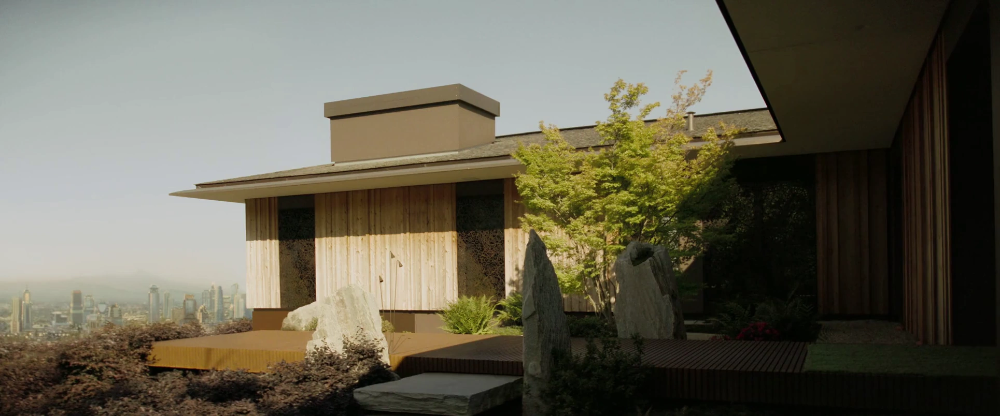

ハワード邸
TVシリーズ ロケーション
LOCATION DATA

The Howard residence is a location {{In|FOTV}}. It was the home of Cooper and Janey prior to the Great War.
Background
{{Section|FOTV}}In the TV series
{{Section|FOTV}}Appearances
The Howard residence appears only {{in|FOTV}}.Gallery
Category:Fallout TV series locations
Impression
（準備中）
（準備中）